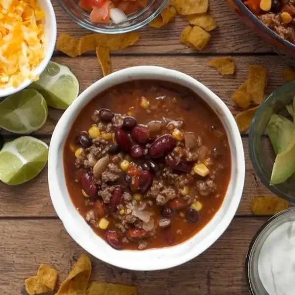

One-Pot Chicken And Mushroom Pasta

Whip up a comforting, one-pot wonder with this Chicken and Mushroom Pasta recipe. It's a creamy, savory delight that'll have everyone asking for seconds!
Ingredients
- 3 tablespoons olive oil
- 1 ½ lb chicken breast(750 g), cubed
- ½ yellow onion, diced
- salt, to taste
- pepper, to taste
- 2 cups cremini mushroom(150 g)
- 3 cloves garlic, minced
- 1 teaspoon dried thyme
- 2 teaspoons paprika
- 4 cups chicken broth(960 mL)
- 1 cup heavy cream(240 mL)
- 1 lb farfalle pasta(500 g)
- 5 oz spinach(150 g)
- 1 cup parmesan cheese(110 g)
Steps
- Heat 2 tablespoons olive oil in a large pot on medium heat. Add chicken, salt and pepper, and brown - make sure to cook through. Set chicken aside.
- Add 1 tablespoon olive oil and the onion into the pot and stir. Cook down for 1-2 minutes.
- Add mushrooms and garlic, and stir to incorporate with the onion. Season with salt and pepper to taste as well as thyme and paprika. Stir to evenly season.
- Add chicken broth and heavy cream to the pot and stir. Bring to a boil, then add the farfalle pasta.
- Cook according to package instructions, being sure to stir every 1-2 minutes to keep the pasta from clumping together. (Cook time may be a little longer in this recipe than when the pasta is boiled in water.)
- When the farfalle pasta is al dente, add the spinach and chicken and stir until the spinach cooks down and incorporates.
- Add parmesan and stir until it’s well-incorporated and you’re left with a smooth sauce.
- Top off with extra parmesan and serve.